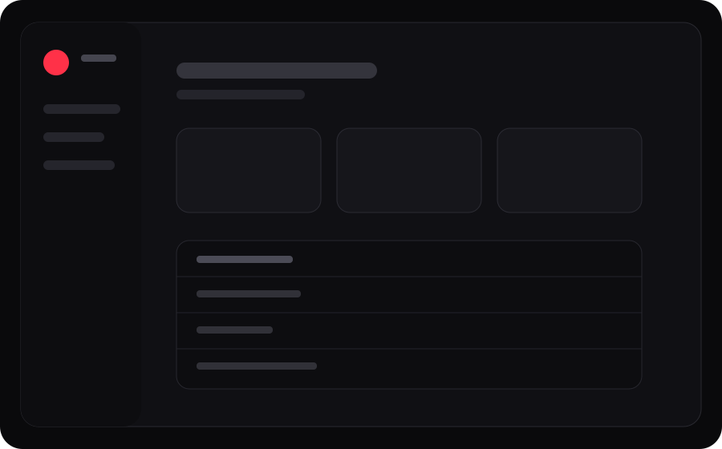

01 · Internal systems
Operations without spreadsheet archaeology.
A focused dashboard concept for stock visibility, status and operational context—designed to make useful information obvious.

Digital studio · Web · Systems · Automation
Akizen designs distinctive digital experiences and practical systems that help businesses look more credible, reduce repeated work and move with less friction.
From friction to flow
Akizen connects the pieces that already exist so information moves once, the right action happens next, and the business becomes easier to see.
Selected work
Akizen works where interface design, workflow thinking and implementation all matter.
A focused dashboard concept for stock visibility, status and operational context—designed to make useful information obvious.

Connect existing tools, move information once, and trigger the right next action automatically.
Strong hierarchy, purposeful motion and a clear path toward action.
Capabilities
Enough breadth to connect the pieces without turning every project into a giant platform.
The studio
Akizen is a focused digital practice for businesses with a messy workflow, a vague product idea, or a digital experience that technically works but feels harder than it should.
The approach is simple: understand the bottleneck, reduce unnecessary complexity, build the smallest useful solution, then improve it from real use.
Clear systems.
Distinctive web.
Useful outcomes.
Start a project
Send the website, workflow or idea. You do not need a polished brief—just explain what feels stuck and what a better outcome would look like.